Contents
- Sample many-rev impulsive burn policies for LEO to GEO
- Initial data, default transfer
- Analytical solution - Hohmann
- all scalar - simple; < 100 days, >5.5 km/s DV
- Inclination increasing with time; reduces delta-V, takes longer
- Raise apogee first - much longer and barely any DV savings; > 150 days
- Inclination at only one node: lowers DV more, more time
- Plot index
Sample many-rev impulsive burn policies for LEO to GEO
It's possible to enter a policy that causes the orbit to become hyperbolic, i.e. escape. In this case the ok flag will be false.
For the fastest transfer time, change inclination at both nodes from the beginning. For the lowest DV, increase apogee first, change inclination at a single node later in the transfer.
See also: PropagateBurnPolicyImpulsive, PlotElementsImpulsive
%-------------------------------------------------------------------------- % Copyright (c) 2019 Princeton Satellite Systems, Inc. % All rights reserved. %--------------------------------------------------------------------------
Initial data, default transfer
data = PropagateBurnPolicyImpulsive;
Analytical solution - Hohmann
dInc = data.el1(2) - data.el0(2); [dVHoh,dv1,dv2,Di1,Di2] = DVHohInc(data.el0(5),data.el0(1),data.el1(5),data.el1(1),dInc); % Report fprintf('Case ''analytic'': \n'); fprintf(' delta-V: %g km/s \n',dVHoh);
Case 'analytic':
delta-V: 4.12289 km/s
all scalar - simple; < 100 days, >5.5 km/s DV
caseName = 'Scalar policy'; data.ap = 0.005; data.per = 0.005; data.inc1 = 0.005; data.inc2 = 0.005; data.verbose = false; % Calculate [burns, out] = PropagateBurnPolicyImpulsive(data); % Plots h1 = PlotElementsImpulsive(data.el0,burns,[],data.el1); subplot(4,2,2) title(sprintf('delta-V: %g km/s\n',SumBurnsDV(burns,1))) set(h1,'Name',sprintf('Elements - %s',caseName)) NewFig(sprintf('Burn Policy - %s',caseName)); plot(out.policy) grid on xlabel('Rev') ylabel('Delta-V (km/s)') legend('per','ap','n1','n2') Plot2D(out.absTimes'/86400,out.burns(:,1)','Time (days)','Delta-V (km/s)','Burn DVs') % Report fprintf('Case ''%s'': \n',caseName); fprintf(' delta-V: %g km/s \n',SumBurnsDV(burns,1)); fprintf(' Duration: %g days \n',max(out.absTimes)/86400);
Case 'Scalar policy':
delta-V: 5.70776 km/s
Duration: 99.5334 days
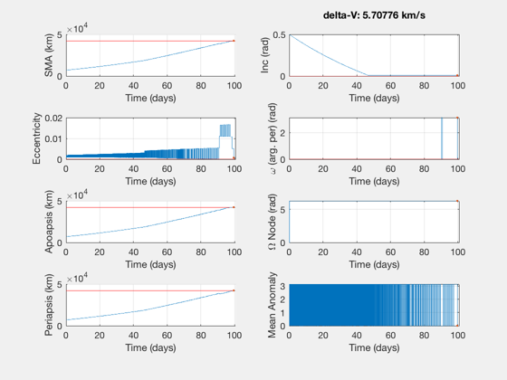 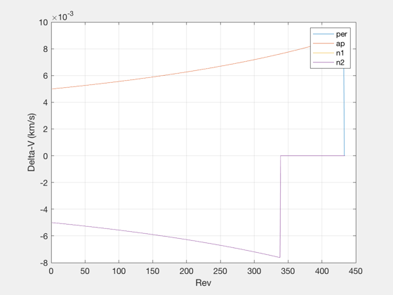 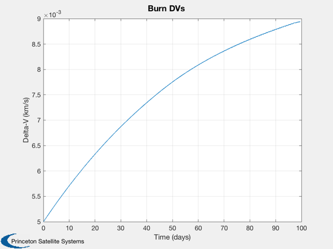 Inclination increasing with time; reduces delta-V, takes longer
5.09 km/s, 110 days
caseName = 'Correct I later'; data.ap = [0.005]; data.per = [0.005]; data.inc1 = [0 0.005]; data.inc2 = [0 0.005]; data.verbose = false; % Calculate [burns, out] = PropagateBurnPolicyImpulsive(data); % Plots h2 = PlotElementsImpulsive(data.el0,burns,[],data.el1); subplot(4,2,2) title(sprintf('delta-V: %g km/s\n',SumBurnsDV(burns,1))) set(h2,'Name',sprintf('Elements - %s',caseName)) NewFig(sprintf('Burn Policy - %s',caseName)); plot(out.policy) grid on xlabel('Rev') ylabel('Delta-V (km/s)') legend('per','ap','n1','n2') Plot2D(out.absTimes'/86400,out.burns(:,1)','Time (days)','Delta-V (km/s)','Burn DVs') % Report fprintf('Case ''%s'': \n',caseName); fprintf(' delta-V: %g km/s \n',SumBurnsDV(burns,1)); fprintf(' Duration: %g days \n',max(out.absTimes)/86400);
Case 'Correct I later':
delta-V: 5.0843 km/s
Duration: 110.077 days
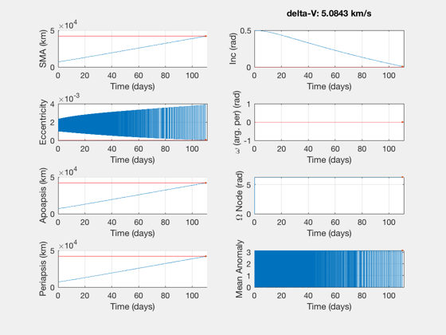 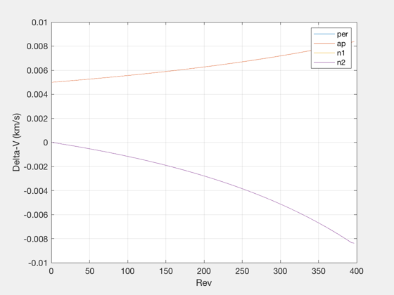 Raise apogee first - much longer and barely any DV savings; > 150 days
caseName = 'Correct rA first'; data.ap = [0 0.005]; data.per = [0.005]; data.inc1 = [0 0.005]; data.inc2 = [0 0.005]; data.verbose = false; % Calculate [burns, out] = PropagateBurnPolicyImpulsive(data); % Plots h3 = PlotElementsImpulsive(data.el0,burns,[],data.el1); subplot(4,2,2) title(sprintf('delta-V: %g km/s\n',SumBurnsDV(burns,1))) set(h3,'Name',sprintf('Elements - %s',caseName)) NewFig(sprintf('Burn Policy - %s',caseName)); plot(out.policy) grid on ylabel('Delta-V (km/s)') legend('per','ap','n1','n2') Plot2D(out.absTimes'/86400,out.burns(:,1)','Time (days)','Delta-V (km/s)','Burn DVs') % Report fprintf('Case ''%s'': \n',caseName); fprintf(' delta-V: %g km/s \n',SumBurnsDV(burns,1)); fprintf(' Duration: %g days \n',max(out.absTimes)/86400);
Case 'Correct rA first':
delta-V: 4.92023 km/s
Duration: 167.74 days
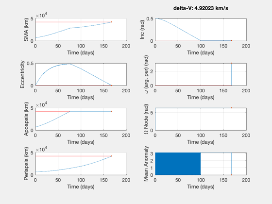 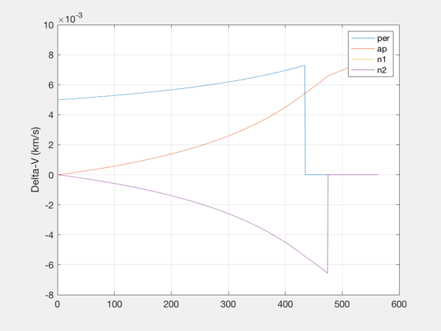 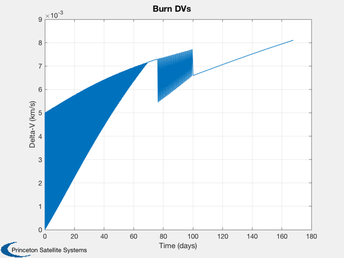 Inclination at only one node: lowers DV more, more time
only 4.6 km/s, >180 days transfer time
caseName = 'Correct I at 1 node'; data.ap = [0 0.004]; data.per = [0.005]; data.inc1 = [0]; data.inc2 = [0 0.003]; data.verbose = false; data.dvMax = 4.5; % Calculate [burns, out] = PropagateBurnPolicyImpulsive(data); % Plots h4 = PlotElementsImpulsive(data.el0,burns,[],data.el1); subplot(4,2,2) title(sprintf('delta-V: %g km/s\n',SumBurnsDV(burns,1))) set(h4,'Name',sprintf('Elements - %s',caseName)) NewFig(sprintf('Burn Policy - %s',caseName)); plot(out.policy) grid on legend('per','ap','n1','n2') Plot2D(out.absTimes'/86400,out.burns(:,1)','Time (days)','Delta-V (km/s)','Burn DVs') % Report fprintf('Case ''%s'': \n',caseName); fprintf(' delta-V: %g km/s \n',SumBurnsDV(burns,1)); fprintf(' Duration: %g days \n',max(out.absTimes)/86400);
Case 'Correct I at 1 node':
delta-V: 4.56206 km/s
Duration: 238.214 days
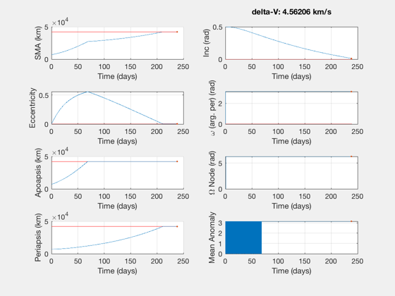 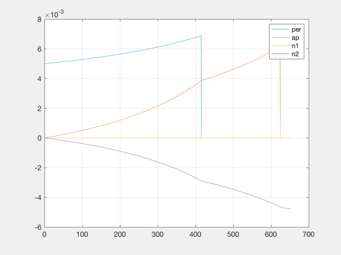 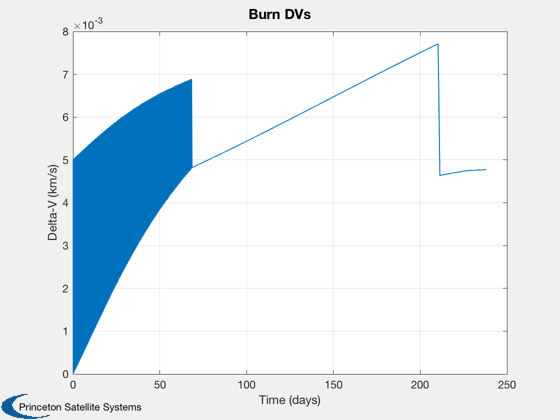 Plot index
Figui;
%--------------------------------------
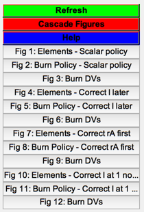